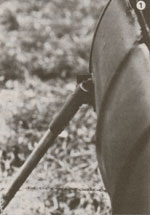
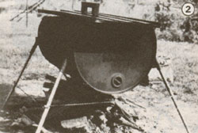
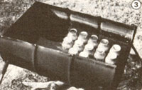

If you can't take the heat, get yourself out of the kitchen and . . .
Summertime and indoor canning go together like-well, on especially hot days, kind of like fire and brimstone. But look: What's that odd-looking device you see in the photos? It's cooled by nature itself . . . and able to process up to 45 quarts at a time while its owners sit sipping iced tea in the shade! It's inexpensive! It's easy to build! It's Super Canner!
To make your own outdoor canning cooker, gather together the materials listed here. Be sure that the 55-gallon drum is clean and free of chemicals, and that it has a bung hole with a screw-type cover at each end (most drums have a large opening at one end and a smaller one at the other).
Now cut the drum and other components as specified. You can use a hacksaw to section the lengths of water pipe and angle iron, but if you don't have a torch or arc welder to cut the drum and metal grating yourself (and to weld the leg-support components together), you'd best find a friend or a metal shop to do the job for you. In any case, remember to retain a little more than half of the drum, enough so-when the canner is filled-the water level will cover the tops of quart canning jars by an inch or two. Also, be sure that the large bung hole, which you'll use to drain the canner, will rest at its lowest point when the canner is mounted on its legs.
Next, make the leg supports by welding each of the 5" pieces of water pipe at an angle of about 45° to a 3" piece of angle iron (see Photo 1). Then drill two holes in each of the supports, and bore a matching pair of mounting holes at each of the canner's four outside corner edges. (The exact location of the holes at each edge isn't particularly critical, as long as all four pairs are positioned consistently.)
With that done, you'll be ready to attach the supports to the drum, using the quarterinch bolts. Don't forget to put a flat washer under each bolt head on the inside of the drum and a spring-lock washer under each nut on the outside. And before you tighten the nuts and bolts, be sure to caulk the joints on both sides thoroughly with silicone sealant (I use GE Silicone Clear Household Glue and Seal), to prevent leaks. Spread the goo under the flat washers and between the leg supports and the barrel's sides.
Once the brackets are caulked and fastened in place, dress up your Super Canner a bit with a good coat of high-temperature black paint. Then go ahead and slip the EMT legs into their supports. Now slide a radiator-hose clamp around each leg, and open each clamp enough to allow you to thread the link chain through all four clamps. Screw one clamp in position about halfway up the leg (or a little less; see Photo 2) . . . pull the chain tight to the next clamp . . . fasten that clamp in place . . . and continue around the canner until you're back where you started. Loosen that clamp, make sure both ends of the chain are threaded through it and pulled tight, and screw the clamp down again.
Now put the metal grating in place inside the canner-it should rest nicely a few inches above the bottom. And finally, though it's optional, you'll probably want to make a cover for your Super Canner, to help hold the heat in. Nearly any appropriately large, flat piece of metal will do. [EDITOR'S NOTE: Avoid using aluminum or galvanized metal.] I made our lid from a scrap piece of corrugated roofing and attached a wooden handle fashioned from a 2 X 4. I strongly recommend a handle, since the canner's cover can get hotter than a fast-food grill. In any event, you'll want to be sure to keep a pair of pot holders handy whenever you fire up your cooker.
Speaking of firing up, all you need is some kindling and-once the blaze is established-a few good-size logs. (If you heat with wood, chances are you've already accumulated a pile of hard-to-split, knotty pieces that are too large for your stove; well, now they can be put to good use under your Super Canner!)
Each time you're finished using the cooker, be sure to let the water cool before removing the bung-hole plug to drain out the liquid. On the other hand, don't keep the water in the canner for an extended period, or the bottom may rust out. If you must drain the canner when the water is still hot, use longhandled pliers to loosen the cap, and unscrew it slowly, or the water could gush out and burn you.
When the canning season is over, touch up any exterior rusty spots with spray paint, give the inside and the grating a light coating of WD-40 lubricant, and remove the legs and chain and stash them in the barrel. Your canner will be prepped for storage, ready and waiting to make cool work of putting up next season's garden produce!
(1) 55-gallon drum, cut as shown in Photo 3
(1) 18" X 31-1/2" piece expanded metal grating
(4) 3/4" X 30" electrical conduit (EMT) (4) 1" X 5" water pipe
(4) 1-1/4" X 3" angle iron
(8) 1/4" X 1/2" bolts
(8) 1/4" nuts
(8) 1/4" lock washers
(8) 1/4" flat washers
(1) tube silicone sealant
(2) cans black spray paint
(4) radiator-hose clamps to fit 3/4" EMT
(1) 12-1/2' length of small link chain
|
 |
 |
 |